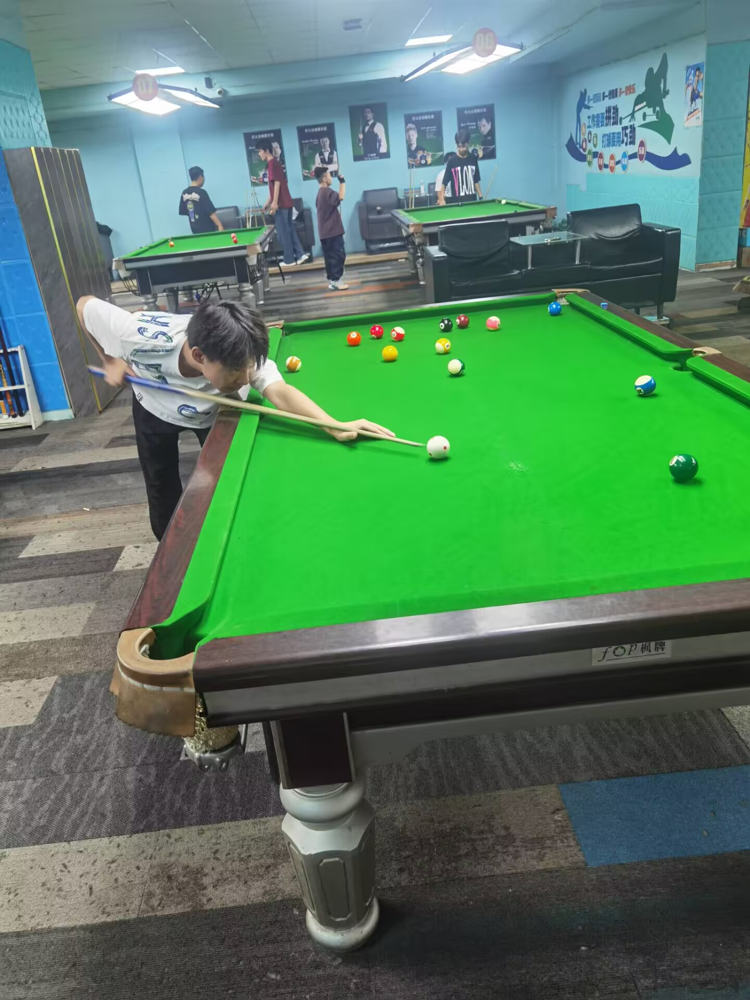

追剧观漫
喜欢看校园恋爱剧，无脑乱追，看过之后，只会觉得降智但是又充满乐趣！
平时看的是国漫，属于是爽文中男主崛起，自带外挂，无脑爽，调整压抑的情绪
小猫小狗
现实没养过宠物，但是每次刷视频都可以看到暖心的小猫小狗，不仅可以提供情绪价值，还可以给人一种想收养它的心，小猫的萌哒哒和小狗的忠实可爱都深深吸引着我。
游戏达人
平时闲下来的时候就是游戏人生，不仅仅是网络上的游戏，偶尔也与朋友一同出门游玩，热衷于羽毛球和台球，以及心情舒适下的一场观影体验。

跑步蹬车
怎么说呢，跑步可以陶冶情操，当你情绪低落，遇事所困，你可以猛冲一把，释放自己的压力，当你无事所做，悠闲的在校园里慢跑更是一种全新的体验；蹬车的快感，来自于速度的突破，每次速度更新，大腿酸痛，都会带来极致的体验。